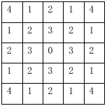

在国际象棋和中国象棋中，马的移动规则相同，都是走“日”字，我们将这种移动方式称为马步移动。如图所示，
从标号为 0 的点出发，可以经过一步马步移动达到标号为 1 的点，经过两步马步移动达到标号为 2 的点。任给
平面上的两点 p 和 s ,它们的坐标分别为 (xp,yp) 和 (xs,ys) ,其中，xp，yp，xs，ys 均为整数。从 (xp,yp)
出发经过一步马步移动可以达到 (xp+1,yp+2)、(xp+2,yp+1)、(xp+1,yp-2)、(xp+2,yp-1)、(xp-1,yp+2)、(xp-2,
yp+1)、(xp-1,yp-2)、(xp-2,yp-1)。假设棋盘充分大，并且坐标可以为负数。现在请你求出从点 p 到点 s 至少
需要经过多少次马步移动？
